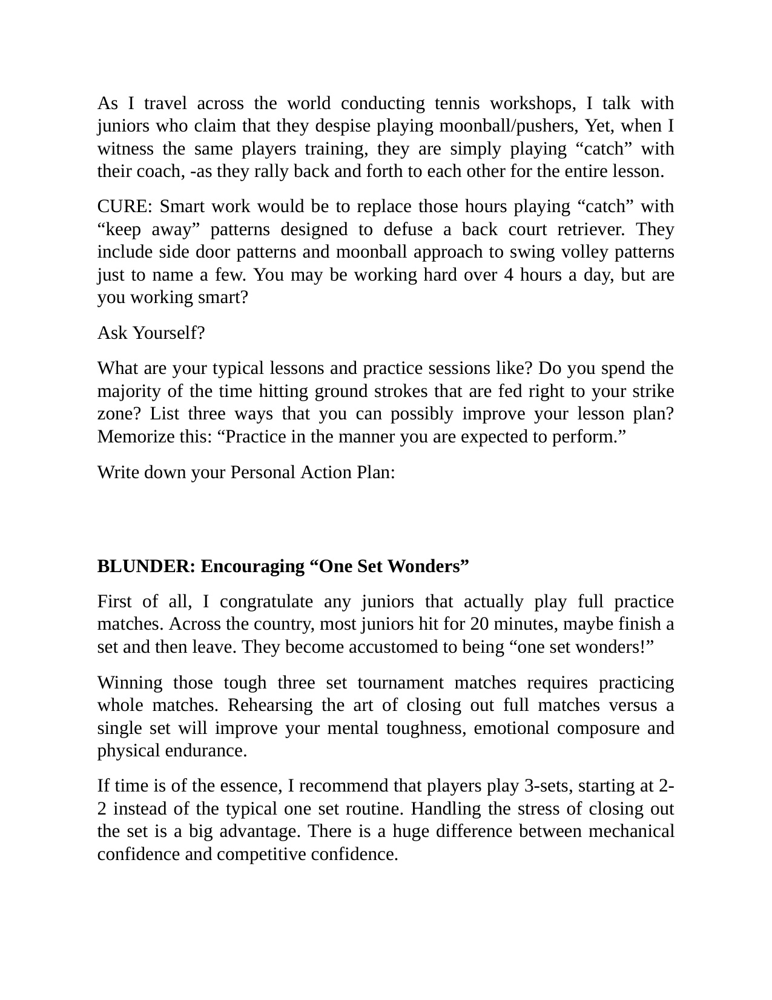
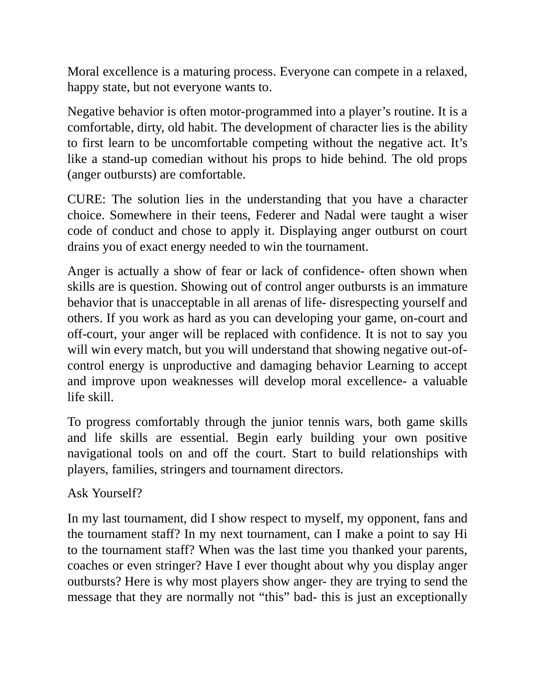
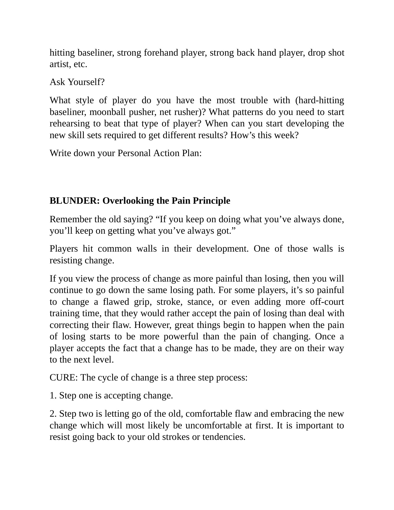

Phần I: Lời Nói Đầu & Những Sai Lầm Tổ Chức Bản Thân
Nghịch lý muôn thuở của người chơi quần vợt, nhận diện kiểu não bộ - thể trạng và công thức thành công toàn diện 4 trụ cột
1. Lời Nói Đầu & Nghịch Lý Muôn Thuở Của Quần Vợt Thi Đấu
Hầu hết các tay vợt phong trào và vận động viên trẻ đều dành một trăm phần trăm thời gian, tiền bạc và năng lượng vào việc trau chuốt các cú đánh kỹ thuật cơ bản.
Thế nhưng, khi bước vào các giải đấu thực chiến căng thẳng, nguyên nhân khiến họ thất bại lại hầu như luôn bắt nguồn từ các vấn đề tâm lý và cảm xúc.
Trong suốt ba mươi lăm năm làm công tác huấn luyện đỉnh cao, tôi chưa từng nghe thấy bất kỳ tay vợt nào bước ra khỏi sân và than khóc rằng: "Giá như tôi vung vợt kết thúc cao hơn một chút thì tôi đã đánh bại đối thủ đó rồi!".
Những gì chúng ta nghe thấy ngày này qua ngày khác luôn là: "Tôi không thể chịu nổi khi phải đấu với những kẻ đẩy bóng lầy lội!", hoặc "Tôi đã dẫn trước năm-hai ở set quyết định và bị nghẹt thở tâm lý!", hoặc "Tôi tệ hại quá... Chắc tôi nên bỏ quần vợt cho rồi!".
Quần vợt đỉnh cao là một môn thể thao đòi hỏi sự kết hợp phức tạp giữa bốn trụ cột: Thể lực, Kỹ thuật, Chiến thuật và Tâm lý - Cảm xúc. Kỹ thuật động tác thực chất chỉ chiếm khoảng hai mươi lăm phần trăm thành công; bảy mươi lăm phần trăm còn lại nằm ở khả năng chịu đựng áp lực và bản lĩnh xử lý khủng hoảng.

Hình 1: Tác giả Frank Giampaolo — chuyên gia tâm lý học và cố vấn huấn luyện thể thao hàng đầu Hoa Kỳ, người định hình phương pháp rèn luyện cảm xúc cho hàng ngàn tay vợt vô địch.
2. Sai Lầm Tổ Chức: Bỏ Qua Kiểu Não Bộ & Thể Trạng Tự Nhiên
Sai lầm lớn đầu tiên của người chơi là cố gắng sao chép lối chơi của một thần tượng mà hoàn toàn không phù hợp với kiểu não bộ (Brain Type) và kiểu cơ thể (Body Type) của chính mình.
Nếu bạn là người có cấu trúc sợi cơ co rút nhanh, tính cách bộc trực và tư duy trực giác, bạn không thể ép mình trở thành một chuyên gia phòng thủ cuối sân kiên nhẫn.
Ngược lại, nếu bạn có sức bền hiếu khí dẻo dai và tâm tính điềm đạm, việc cố gắng bắt chước phong cách giao bóng lên lưới liều lĩnh sẽ chỉ dẫn đến chuỗi tự đánh hỏng thảm họa.
Bên cạnh đó, một sai lầm phổ biến khác là trở thành "Người chơi vô trách nhiệm" (The Unaccountable Player).
Những người chơi này luôn có sẵn một danh sách các lý do biện hộ sau mỗi thất bại: gió quá to, mặt sân quá trơn, ánh nắng chói mắt, trọng tài gian lận, hoặc dây cước bị chùng.
Họ từ chối nhìn thẳng vào sự thật rằng đối thủ cũng thi đấu dưới điều kiện thời tiết hệt như họ, và người chiến thắng là người có khả năng thích nghi tâm lý vượt trội.
Hãy thiết lập bản sắc thi đấu độc bản của riêng bạn: bạn là ai trên sân đấu, vũ khí lợi hại nhất của bạn là gì, và bạn sẽ dựa vào điều gì để giành điểm số khi mọi thứ xung quanh đang sụp đổ?

Phần II: Sai Lầm Trong Huấn Luyện & Phương Pháp Tập Luyện Thông Minh
Chấm dứt sự chăm chỉ mù quáng, hóa giải hội chứng kỳ quan một set và giải mã bốn tầng tốc độ chuyên biệt trong môn quần vợt
3. Sai Lầm Huấn Luyện: Chăm Chỉ Mù Quáng Thay Vì Làm Việc Thông Minh
Rất nhiều vận động viên và phụ huynh lầm tưởng rằng chỉ cần bỏ ra hàng ngàn giờ đứng trên sân đánh bóng vô định từ giỏ bóng của huấn luyện viên là sẽ trở thành nhà vô địch.
Đó là sự "chăm chỉ mù quáng" (Blind Hard Work).
Một buổi tập luyện thông minh (Smart Work) phải được thiết kế xoay quanh các kịch bản thi đấu thực tế: mô phỏng các tình huống chịu áp lực ở điểm 30-40, rèn luyện kỹ năng phục hồi sau cú giao bóng một hỏng, và tập luyện các bài drill có tính điểm thưởng phạt nghiêm ngặt.
Nếu một buổi tập chỉ toàn những đường bóng êm ái rơi đúng tầm tay trong vùng thoải mái, bạn đang tự ru ngủ chính mình và sẽ sụp đổ ngay khi đối thủ thực chiến bắt đầu tung ra những quả bóng khó chịu.
Bên cạnh đó, căn bệnh "Kỳ quan một set" (One Set Wonders) là nỗi ám ảnh phổ biến: người chơi bùng nổ thắng set một với tỷ số 6-1, nhưng sau đó hoàn toàn cạn kiệt năng lượng cảm xúc và thua ngược 1-6, 2-6 ở hai set sau.
Nguyên nhân là do họ phung phí quá nhiều năng lượng thần kinh vào những phản ứng cảm xúc thái quá sau mỗi điểm số ở đầu trận.
4. Bốn Tầng Tốc Độ Tennis & Sức Mạnh Của Việc Ghi Chép Biểu Đồ Trận Đấu
Một sai lầm cơ bản khác là đồng nhất tốc độ trong quần vợt với tốc độ chạy nước rút một trăm mét của đôi chân.
Trong thực tế, tốc độ tennis bao gồm bốn tầng nhận thức liên hoàn:
Tầng một: Tốc độ nhận thức (Cognitive Speed). Khả năng phát hiện sớm thói quen và tư thế mở vợt của đối phương trước khi bóng tiếp xúc.
Tầng hai: Tốc độ phán đoán (Anticipation Speed). Khả năng tính toán quỹ đạo, độ xoáy và điểm rơi của quả bóng ngay khi bóng rời mặt dây đối thủ.
Tầng ba: Tốc độ phản xạ (Reaction Speed). Thời gian để hệ thần kinh truyền lệnh co cơ và kích hoạt bước nhún đệm Split-Step.
Tầng tư: Tốc độ cơ học của đôi chân (Foot Speed). Sự bứt tốc ba bước đầu tiên tới vị trí bóng.
Một tay vợt có tốc độ nhận thức và phán đoán siêu việt sẽ luôn có mặt tại điểm rơi bóng trước một vận động viên điền kinh chỉ biết cắm đầu chạy theo quả bóng.
Cuối cùng, đừng bao giờ chỉ "xem" lại trận đấu của mình một cách thụ động. Hãy sử dụng bảng ghi chép biểu đồ trận đấu (Match Charting): ghi lại chính xác bạn giành điểm từ đâu, bạn phạm lỗi tự đánh hỏng ở quả đánh thứ mấy, và tỷ lệ thắng điểm giao bóng hai là bao nhiêu.
Những con số thống kê lạnh lùng sẽ vạch trần mọi ảo tưởng và chỉ ra chính xác những gì bạn cần cải thiện.

Phần III: Giải Mã Nghẹt Thở (Choking) vs Hoảng Loạn (Panicking) & Thái Độ
Phân biệt sự khác biệt bản chất giữa nghẹt thở và hoảng loạn dưới áp lực, phác đồ điều trị 20 giây và sức mạnh của thái độ thi đấu
5. Sai Lầm Nhận Thức: Choking (Nghẹt Thở) Khác Biệt Hoàn Toàn Với Panicking (Hoảng Loạn)
Đa số các huấn luyện viên và vận động viên thường gộp chung mọi thất bại tâm lý dưới tên gọi "Choking". Đây là một sai lầm chẩn đoán tai hại vì phương pháp điều trị cho hai trạng thái này hoàn toàn đối nghịch nhau.
Trạng thái Nghẹt thở tâm lý (Choking):
Bản chất: Người chơi bị chi phối bởi sự "Kiểm Soát Quá Mức" (Over-Control).
Triệu chứng: Người chơi quá sợ hãi thất bại nên cố gắng dùng ý thức can thiệp vào từng chuyển động vi mô của cơ bắp. Hệ cơ bắp bị siết chặt căng cứng, hơi thở nông và ngắn, biên độ vung vợt bị thu hẹp lại. Quả bóng được đẩy sang sân đối phương một cách rụt rè, yếu ớt và thiếu độ sâu, tạo cơ hội cho đối thủ tràn lên dứt điểm.
Trạng thái Hoảng loạn tâm lý (Panicking):
Bản chất: Người chơi bị rơi vào tình trạng "Mất Kiểm Soát Hoàn Toàn" (Loss of Control).
Triệu chứng: Dưới sức ép quá lớn, bộ não của người chơi bị quá tải và muốn trốn chạy khỏi cảm giác đau đớn ngay lập tức. Họ bắt đầu vội vã giao bóng khi chưa sẵn sàng, tung ra những cú đánh liều mạng không tính toán ngay từ quả bóng đầu tiên, đánh bóng bừa bãi ra ngoài sân cả mét chỉ để kết thúc lượt bóng càng nhanh càng tốt.

Hình 2: Ma trận chẩn đoán tâm lý — phân biệt cơ chế Kiểm soát quá mức (Choking) vs Mất kiểm soát (Panicking) và phác đồ điều trị phục hồi trong hai mươi giây giữa các điểm số.
6. Phác Đồ Điều Trị Bốn Bước Trong 20 Giây & Sai Lầm Thái Độ
Dù bạn đang bị Choking hay Panicking, phác đồ bốn bước trong khoảng thời gian hai mươi giây giữa các điểm số là phương thuốc cứu rỗi duy nhất:
Bước một: Quay lưng vào góc sân (Ngắt kết nối cảm xúc). Tuyệt đối không nhìn vào đối thủ hay khán giả. Hãy bước chậm về phía góc sân sau để cô lập bản thân khỏi mọi kích thích tiêu cực bên ngoài.
Bước hai: Kích hoạt nhịp thở phó giao cảm. Hít sâu bằng mũi trong bốn giây để lồng ngực mở rộng, sau đó thở từ từ ra bằng miệng trong sáu giây. Động tác thở này gửi tín hiệu an toàn trực tiếp về hạch hạnh nhân trong não bộ, làm chậm nhịp tim và giãn nở các mạch máu.
Bước ba: Điều chỉnh dây vợt (Tĩnh tâm định hướng). Dùng tay nắn lại từng sợi dây cước trên mặt vợt. Hành động cơ học lặp đi lặp lại này giúp tâm trí tập trung vào khoảnh khắc hiện tại và ngăn chặn những suy nghĩ tiêu cực vẩn vơ.
Bước bốn: Kịch bản Hollywood (Xác định rõ ý đồ). Lập trình sẵn kế hoạch cho điểm số tiếp theo: giao bóng vào đâu, trả bóng vào góc nào và chuẩn bị bước chân ra sao.
Về thái độ: hãy nhớ rằng kỹ năng (Aptitude) chỉ đưa bạn lên đến một mức độ nhất định, nhưng thái độ (Attitude) mới là yếu tố quyết định đỉnh cao sự nghiệp của bạn.
Sự khiêm nhường khoa học, tôn trọng đối thủ và đón nhận thử thách với tinh thần học hỏi là những phẩm chất không thể thiếu của một nhà vô địch đích thực.

Phần IV: Tăng Trưởng Đột Phá, Kịch Bản Hollywood & Hạnh Phúc Hiện Tại
Chữa lành căn bệnh cầu toàn, xây dựng hệ thống kế hoạch tác chiến B-C, kịch bản tâm trí Hollywood và nghệ thuật tận hưởng hành trình
7. Sai Lầm Tăng Trưởng: Căn Bệnh Cầu Toàn (Perfectionism) & Biến Vấp Ngã Thành Bậc Thang
Căn bệnh nguy hiểm nhất đối với những người chơi tài năng là sự Cầu Toàn Bệnh Lý (Perfectionism).
Người cầu toàn luôn đòi hỏi mọi cú đánh của mình phải sạch sẽ, hoàn hảo như trong sách giáo khoa và không được phép phạm bất kỳ sai lầm nào. Khi một cú đánh bị trúng vành hoặc bị đối thủ phản công, họ lập tức rơi vào trạng thái dằn vặt cay đắng và tự trừng phạt bản thân.
Trong thực tế thi đấu đỉnh cao, không có trận đấu nào là hoàn hảo. Ngay cả những huyền thoại như Rafael Nadal hay Novak Djokovic cũng chỉ thắng khoảng năm mươi tư phần trăm tổng số điểm trong suốt sự nghiệp rực rỡ của họ.
Điều này có nghĩa là bạn sẽ thua gần một nửa số điểm trong mọi trận đấu bạn bước vào!
Nhà vô địch nhìn nhận các sai lầm và cú đánh hỏng như những dữ liệu phản hồi quý giá (Feedback Data), biến những hòn đá ngáng đường (Stumbling Blocks) thành những bậc thang vững chắc (Stepping Stones) để bước lên đỉnh cao vinh quang.
8. Xây Dựng Kế Hoạch Tác Chiến B & C Cùng Kịch Bản Hollywood
Hầu hết các tay vợt bước vào sân với một Kế hoạch A duy nhất: "Tôi sẽ chơi theo cách của tôi, đánh bóng thật mạnh và ép đối thủ!".
Nhưng điều gì sẽ xảy ra nếu hôm nay đối thủ trả giao bóng quá xuất sắc, hoặc những cú thuận tay sấm sét của bạn liên tục bay ra ngoài vì gió lốc?
Nếu không có Kế hoạch B và Kế hoạch C, bạn sẽ nhanh chóng bị bế tắc và rơi vào cơn khủng hoảng tâm lý.
Kế hoạch B: Chuyển sang lối chơi kiên nhẫn an toàn, tăng độ cao quả bóng qua lưới thêm hai mét, nhắm sâu vào giữa sân đối phương để triệt tiêu mọi góc bẻ bóng của họ.
Kế hoạch C: Thay đổi nhịp độ hoàn toàn bằng các cú chém slice ngắn góc rộng, chủ động bỏ nhỏ để kéo đối thủ lên lưới và lốp bóng qua đầu.
Bên cạnh đó, khái niệm "Kịch Bản Hollywood" (The Hollywood Script) là công cụ hình dung trực quan tối thượng:
Trước ngày thi đấu, hãy nhắm mắt lại và hình dung trận đấu diễn ra như một bộ phim bom tấn kịch tính. Đừng chỉ tưởng tượng bạn thắng dễ dàng 6-0, 6-0.
Hãy hình dung kịch bản bạn bị dẫn trước 2-5 ở set ba, bạn bị đối thủ hô gian một quả bóng nhạy cảm, bạn phải đối mặt với Match Point dưới sự cổ vũ của đám đông đối địch... Và sau đó, hãy hình dung bạn điềm tĩnh áp dụng phác đồ hai mươi giây, bẻ gãy từng quả bóng và thực hiện cú lội ngược dòng kinh điển!
Khi kịch bản ấy đã được bộ não trải nghiệm hàng chục lần trong tâm trí, bạn sẽ không bao giờ bị nao núng khi nó thực sự xảy ra trên sân đấu.
9. Nguyên Lý Nỗi Đau & Đừng Bao Giờ Trì Hoãn Hạnh Phúc
Cuối cùng, sai lầm bi kịch nhất của nhiều vận động viên là "Trì Hoãn Hạnh Phúc" (Postponing Happiness):
Họ tự nhủ: "Tôi chỉ hạnh phúc khi nào tôi lọt vào top mười", "Tôi chỉ vui khi nào tôi vô địch giải đấu này", hoặc "Tôi chỉ thanh thản khi nào tôi nhận được học bổng đại học".
Khi bạn gắn chặt hạnh phúc của mình vào kết quả tương lai, mỗi buổi tập và mỗi trận đấu hiện tại sẽ biến thành một gánh nặng tâm lý ngột ngạt.
Nguyên lý Nỗi Đau (The Pain Principle) khẳng định rằng: sự tiến bộ và trưởng thành chỉ nảy mầm khi bạn dám đối mặt với những thử thách khó khăn và chấp nhận những cảm xúc bất an trên sân đấu.
Hạnh phúc đích thực không nằm ở chiếc cúp vô địch bám bụi trên kệ tủ; hạnh phúc nằm ở giọt mồ hôi rơi trên sân tập hôm nay, ở tiếng bóng chạm đanh gọn vào giữa tâm mặt vợt, và ở niềm tự hào khi bạn biết mình đã chiến đấu với một trăm phần trăm trái tim và lòng quả cảm!